codly.callout
A row attached to a source line in a Codly code block; it can be plain text or a pointed bubble.
Signature
// Create a new callout.
codly.callout(
body,
line: int,
align: auto,
breakable: auto,
inset: auto,
fill: auto,
stroke: auto,
source-indent: false,
placement: "below",
// Parameters for the bubble if any.
bubble-gap: auto,
bubble-align: auto,
bubble-fill: auto,
bubble-stroke: auto,
bubble-inset: auto,
bubble-outset: auto,
bubble-radius: auto,
bubble-width: auto,
// Parameters for the bubble's pointer if used.
pointer: none,
pointer-align: auto,
pointer-size: auto,
pointer-height: auto,
pointer-width: auto,
pointer-offset: auto,
)body is positional. line is required and named. Normally, callouts are created by entries in the callouts field; see codly.callout-config.
Fields
| Field | Type | Default / required | Meaning |
|---|---|---|---|
body |
content |
Required, positional | Content displayed in the callout. |
line |
int |
Required, named | One-based source line to which the callout is attached. |
align |
none | alignment | auto |
auto |
Grid cell alignment; auto inherits the grid alignment. |
breakable |
none | bool | auto |
auto |
Whether the cell can break across pages; auto inherits the grid setting. Pointed bubble groups remain together. |
inset |
none | length | dictionary | auto |
auto |
Grid cell padding; auto inherits the grid inset. |
fill |
none | paint | auto |
auto |
Grid cell background; auto inherits the body-row fill. |
stroke |
none | stroke | auto |
auto |
Grid cell border; auto inherits the grid stroke. |
source-indent |
bool |
false |
Whether plain callouts retain source indentation and reserve the gutter columns. Pointed bubbles keep their character anchors. |
placement |
"above" | "below" |
"below" |
Whether the callout appears above or below its source line. |
bubble-gap |
length | dictionary | auto |
auto |
Minimum horizontal and vertical separation between bubbles. A length sets both axes; omitted dictionary axes use 0.5em. |
pointer |
none | int |
none |
One-based character anchor in the source line; zero selects the line start. none disables the pointed bubble. |
pointer-align |
"start" | "center" | "end" | auto |
auto |
Preferred alignment of the bubble around its source character, clamped to the available row. |
pointer-size |
length | auto |
auto |
Default arrow height and half-base width. |
pointer-height |
length | auto |
auto |
Arrow height; auto uses pointer-size. |
pointer-width |
length | auto |
auto |
Full arrow base width; auto uses twice pointer-size. |
pointer-offset |
length | auto |
auto |
Horizontal tip shift from the source character; positive moves right, negative moves left. Clamped to the bubble without moving its body. |
bubble-align |
alignment | auto |
auto |
Alignment of content inside the bubble, independent of grid cell alignment. |
bubble-fill |
none | paint | auto |
auto |
Fill shared by the bubble body and pointer. |
bubble-stroke |
none | stroke | auto |
auto |
Stroke around the single bubble and pointer outline. |
bubble-inset |
length | dictionary | auto |
auto |
Padding inside the bubble body. |
bubble-outset |
length | dictionary | auto |
auto |
Additional painted extent around the padded body, reserved in the row. |
bubble-radius |
length | auto |
auto |
Corner radius of the bubble body. |
bubble-width |
length | ratio | auto |
auto |
Preferred padded body width; auto fits the content within the available row. |
Behavior
Callout lines are source-line coordinates, unaffected by displayed line-number offsets. Pointer positions count characters in the source line, with zero denoting its start; the pointer follows the rendered character when code wraps. Negative pointers, dimensions, insets, outsets, and gaps are rejected. A bubble’s body and arrow share one fill and outline, and bubble text wraps to its available width.
Unspecified or auto bubble styling inherits from codly.bubble, after explicit codly.callout styling. Entry values in callouts take precedence over the element’s set-rule values. Explicit none disables bubble fill or stroke; pointer: none keeps a callout plain.
codly.callout-set_(..args) sets defaults for callout cells and bubbles; codly.callout-show_(it, ..args) installs a show rule taking replacement content or a callback such as it => [#it]. Bubble-specific defaults and show rules are documented on codly.bubble.
Example
#import "@preview/codly:2.0.0" as codly
#show: codly.callout-set_(source-indent: source-indent)
#codly.new(
```py
if ready:
start()
```,
callouts: (
(line: 1, body: [Plain callout aligned with the source.]),
(line: 2, pointer: 3, body: [Pointing at `start`.]),
),
)Edit & run on your device
The controls supply the example variables. Their definitions are hidden here; Copy code includes the current values and your edits.
